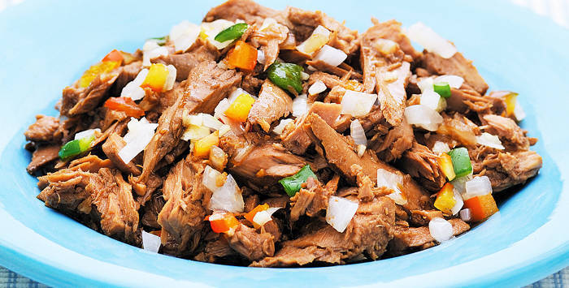
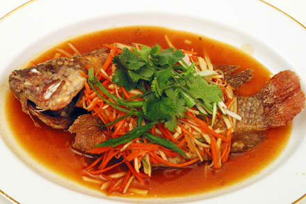
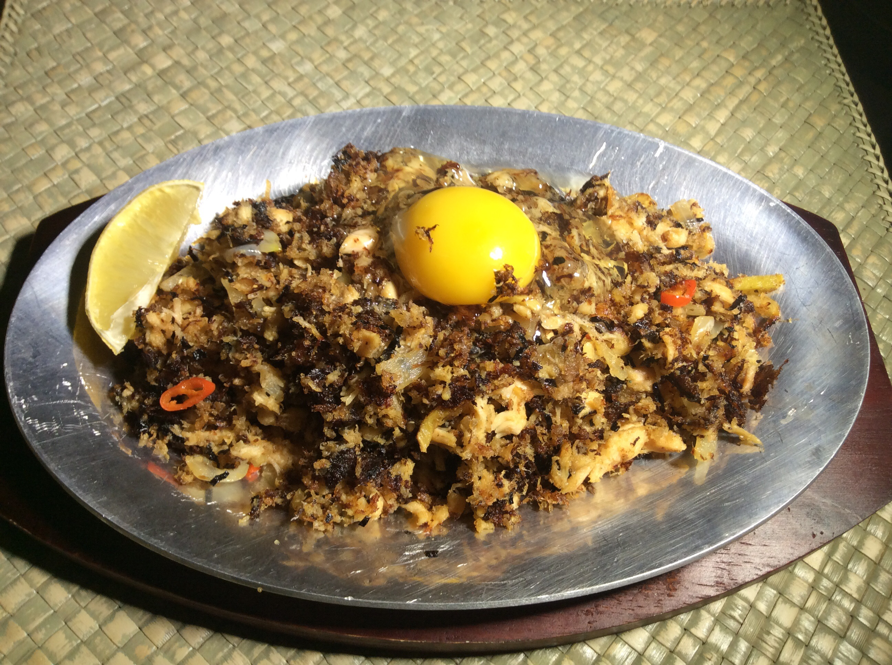
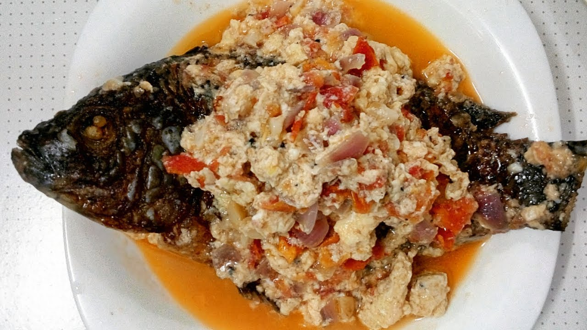

FILIPINO FOOD RECIPES





-- Creamy Garlic Salmon --
•1 lb. salmon fillet
•6 ounces cherry tomato
•2 cups spinach
•8 oz. heavy whipping cream
•1 ¼ cup white wine
•1/2 cup grated Parmesan cheese
•1 piece onion
•4 cloves garlic
•5 tablespoons cooking oil
•3 tablespoons butter
•Salt and ground black pepper to taste
-- Sizzling Tuna Sisig --
•8 ounces tuna steak
•2 pieces long green pepper
•4 Thai chili
•2 tablespoons Lady's Choice Mayonnaise
•3 tablespoons Knorr Liquid Seasoning
•1/4 cup pork chicharon
•1 medium red onion
•1 teaspoon garlic powder
•1/4 teaspoon salt
•1/4 teaspoon ground black pepper
•3 tablespoons butter
-- Sweet and Sour Tilapia --
•2 pieces tilapia cleaned
•2 tablespoons Knorr Liquid Seasoning
•1 piece red bell pepper
•1 piece green bell pepper
•1 piece carrot
•5 cloves garlic
•1 piece onion
•2 thumbs ginger
•2 tablespoons cornstarch
•2 cups water
•5 ½ tablespoons white vinegar
•8 tablespoons tomato ketchup
•7 tablespoons white sugar
•1 ¼ cup cooking oil
•Salt and ground black pepper to taste
-- Salmon Sisig --
•12 ounces salmon fillet
•1/4 cup Lady's Choice Mayonnaise
•1 ½ teaspoons Knorr Liquid Seasoning
•1 piece onion
•3/4 cup green onion
•6 pieces Thai chili pepper
•3/4 cup chicharon
•3 tablespoons butter
•1/4 teaspoon garlic powder
•1 ½ tablespoons cooking oil
-- Sarciadong Isda --
•2 lbs Tilapia cleaned
•3 pieces medium-sized tomatoes
•3 pieces medium-sized onions
•1 3/4 cups water
•1/2 teaspoon ground black pepper
•1/2 cup green onions chopped (optional)
•2 teaspoons garlic
•3 pieces raw eggs beaten
•2 tablespoons fish sauce